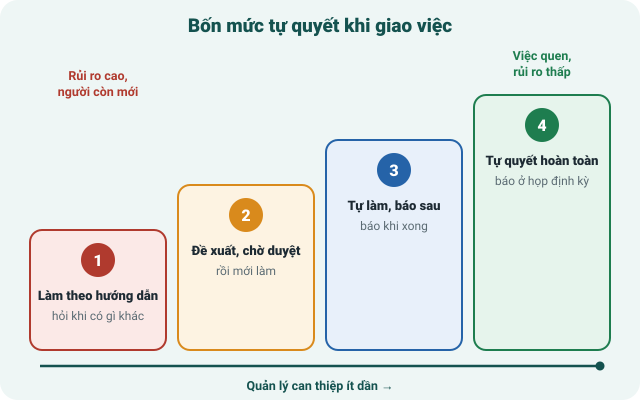

K9 · Lãnh đạo và phát triển người khác › Bậc 5 Dẫn dắt
Giao việc rõ, theo dõi và phản hồi định kỳ
Bài này làm Tờ 3: Phiếu giao việc. Mẫu in. Cách phản hồi theo hành vi đã học ở Kèm cặp đồng nghiệp (N4). Người nhận việc có thể học Ghi việc và báo sớm.
1. Mục tiêu
- Giao việc bằng Phiếu giao việc 6 ô và nhờ người nhận nhắc lại.
- Chọn mức tự quyết phù hợp, đặt mốc kiểm tra cho việc đã giao.
2. Khởi động truy xuất
- Năm phần của Mục tiêu đội một trang là gì?
- Vì sao không nên hỏi "mọi người hiểu chưa?"
Đáp án
- Vì sao; 2–3 kết quả; không làm; phần của từng người; cách theo dõi.
- Vì gần như ai cũng đáp "hiểu rồi". Nhờ người nghe nói lại mới biết họ hiểu đến đâu.
Xem lại: Nói rõ mục tiêu đội.
3. Giải thích
Giao việc không rõ là nguồn gốc của nhiều lần làm lại. Người nhận đoán ý, làm xong thì sai. Quản lý bực, rồi tự làm lại.
Phiếu giao việc có 6 ô. Bạn có thể nói miệng, nhưng nên ghi lại cho cả hai cùng xem.
- Kết quả cần có: sản phẩm cuối là gì, dùng cho ai.
- Tiêu chuẩn đạt: thế nào là xong và đạt.
- Hạn: ngày giờ cụ thể.
- Mức tự quyết: người nhận được tự quyết đến đâu.
- Nguồn lực: tài liệu, ngân sách, người có thể hỏi.
- Mốc kiểm: khi nào hai bên xem tiến độ.

Chọn mức tự quyết. Việc rủi ro cao hoặc người nhận chưa có kinh nghiệm: mức 1 hoặc 2. Việc quen và rủi ro thấp: mức 3 hoặc 4. Nói rõ mức ngay lúc giao, đừng để người nhận đoán.
Nhờ người nhận nhắc lại. Hỏi: "Em tóm lại giúp anh: kết quả, hạn, và chỗ nào em tự quyết?" Họ nói lại đúng thì mới bắt đầu.
Theo dõi theo mốc, không theo cảm giác. Kiểm tra ở mốc đã hẹn. Ngoài mốc, chỉ can thiệp khi có tín hiệu rủi ro. Hỏi quá dày khiến người nhận thấy không được tin.
Hai kiểu phản hồi
- Kịp thờiNgay sau sự việc, ngắn, riêng tư nếu là góp ý.
- Định kỳTrong 1-1: nhìn lại vài tuần, chọn một điều để tiến bộ.
Phản hồi gồm cả ghi nhận việc làm tốt. Nói cụ thể: điều đã làm, tác động của nó. "Cảm ơn em" chưa đủ để người ta biết nên lặp lại điều gì.
4. Ví dụ tại nơi làm việc Việt Nam
Tình huống giả định. Chị Thảo là trưởng phòng điều phối ở một công ty vận tải tại Hải Phòng. Chị giao Long, nhân viên 2 năm kinh nghiệm, lập kế hoạch xe cho đợt hàng cao điểm trước Tết.
Năm trước, chị chỉ nói: "Em lo kế hoạch xe Tết nhé." Long làm xong thì thiếu xe cho hai khách lớn, chị phải làm lại.
Năm nay, chị dùng Tờ 3. Kết quả: bảng phân xe 4 tuần cao điểm, gửi đội lái xe. Tiêu chuẩn: đủ xe cho 15 khách hợp đồng, có 2 xe dự phòng mỗi ngày. Hạn: 17 giờ thứ Sáu tuần sau. Mức tự quyết: mức 2 với việc thuê xe ngoài, vì tốn tiền; mức 3 với việc xếp lịch tài xế. Nguồn lực: số liệu năm trước, anh Sơn kế toán về giá thuê. Mốc kiểm: thứ Ba xem bản nháp.
Long nhắc lại và hỏi thêm về ngân sách thuê ngoài. Thứ Ba, bản nháp còn thiếu xe cho một khách. Chị chỉ ra ngay, Long sửa.
Sau đợt hàng, chị nói với Long: "Bảng của em có xe dự phòng, nên hôm xe hỏng ở cảng không trễ chuyến nào."
Vì sao cách này tốt: giao đủ 6 ô, mức tự quyết khác nhau theo rủi ro. Mốc kiểm bắt lỗi sớm. Lời ghi nhận nêu rõ việc và tác động.
5. Thực hành
Tình huống giả định. Bạn là quản lý một cửa hàng điện thoại tại Biên Hòa. Bạn muốn giao Vân, nhân viên bán hàng 1 năm, tổ chức đợt khuyến mãi cuối tuần cho học sinh, sinh viên.
Điền Phiếu giao việc 6 ô. Viết một câu ghi nhận cụ thể nếu đợt khuyến mãi thành công.
Gợi ý 1
Việc nào trong đợt khuyến mãi tốn tiền hoặc ảnh hưởng uy tín cửa hàng? Việc đó nên ở mức tự quyết thấp hơn.
Gợi ý 2
Câu ghi nhận có hai phần: điều Vân đã làm, và tác động của nó.
Lời giải mẫu
- Kết quả: đợt khuyến mãi thứ Bảy, Chủ nhật, có bảng giá, tờ rơi, phân ca.
- Tiêu chuẩn: bán ít nhất 20 máy cho khách có thẻ học sinh, sinh viên; không bán dưới giá vốn.
- Hạn: kế hoạch xong trước 12 giờ thứ Tư.
- Mức tự quyết: mức 2 với mức giảm giá; mức 3 với tờ rơi và phân ca.
- Nguồn lực: 2 triệu đồng in ấn; anh Quang kho hàng về số máy tồn.
- Mốc kiểm: chiều thứ Tư xem kế hoạch; tối thứ Bảy xem số bán.
- Câu ghi nhận: "Em xếp thêm một người ở quầy từ 15 đến 17 giờ, nên khách không phải chờ lúc đông nhất."
(Số liệu là giả định.)
6. Tự kiểm tra
Chọn đáp án. Mỗi lựa chọn đều có giải thích.
Câu 1. Bạn giao: "Em làm báo cáo tồn kho nhé." Ô nào của Phiếu giao việc còn thiếu?
-
Chưa đúng. Còn thiếu nhiều hơn thế. Người nhận chưa biết báo cáo dùng cho ai, đạt khi nào, được tự quyết đến đâu.
-
Đúng. Đúng. Tên việc chưa phải là giao việc. Người nhận sẽ phải đoán.
-
Chưa đúng. Người có kinh nghiệm vẫn không đọc được ý bạn. Mỗi lần giao, nhu cầu có thể khác.
Câu 2. Một nhân viên mới được giao chọn nhà cung cấp in ấn cho hội chợ, hợp đồng 80 triệu đồng. Mức tự quyết nào hợp lý?
-
Chưa đúng. Việc tốn nhiều tiền và người nhận còn mới. Sai thì khó sửa.
-
Đúng. Đúng. Nhân viên vẫn tự tìm hiểu và so sánh, còn quyết định tốn tiền thì có người duyệt.
-
Chưa đúng. Tự làm thì nhân viên không học được. Mức 2 vừa an toàn vừa giúp họ tiến bộ.
Câu 3. Đã hẹn mốc kiểm vào thứ Năm. Thứ Hai, bạn muốn nhắn hỏi tiến độ. Khi nào nên hỏi?
-
Chưa đúng. Hỏi quá dày khiến người nhận thấy không được tin. Họ cũng mất thời gian báo cáo.
-
Đúng. Đúng. Mốc đã hẹn là để hai bên yên tâm. Ngoài mốc, chỉ can thiệp khi có lý do.
-
Chưa đúng. Có tín hiệu rủi ro mà im lặng thì có thể muộn. Mốc là lịch chính, không phải lệnh cấm hỏi.
Câu 4. Câu ghi nhận nào giúp người nghe biết nên lặp lại điều gì?
-
Chưa đúng. Câu này ấm áp nhưng không nói rõ điều gì đã làm tốt.
-
Đúng. Đúng. Có hành động cụ thể và tác động. Người nghe biết nên làm vậy lần sau.
-
Chưa đúng. Khen tính cách hoặc chung chung. Người nghe không biết phát huy điều gì.
7. Phản tư
- Lần gần nhất một việc bạn giao bị làm lại, ô nào trong 6 ô đã bị bỏ trống?
- Bạn có đang kiểm tra ai quá dày hoặc quá thưa không?
8. Áp dụng thật
Trong 7 ngày tới, giao một việc thật bằng Tờ 3. Nhờ người nhận nhắc lại. Ghi một câu ghi nhận cụ thể khi việc xong.
9. Siêu dữ liệu
| skill | K9 · Lãnh đạo và phát triển người khác |
|---|---|
| level | Bậc 5 · Dẫn dắt |
| group | N5 |
| framework_map | WEF: Leadership and social influence; Talent management; SkillsFuture CCS: Developing People; NACE: Leadership; CSfW: 2b Connect and work with others (chỉ dẫn chiếu) |
| updated | 2026-11-14 |
Hoàn thành bài
Đánh dấu đã học để site gợi ý lịch ôn sau 1, 3 và 7 ngày. Dữ liệu chỉ lưu trên máy của bạn.
Lịch ôn gợi ý: